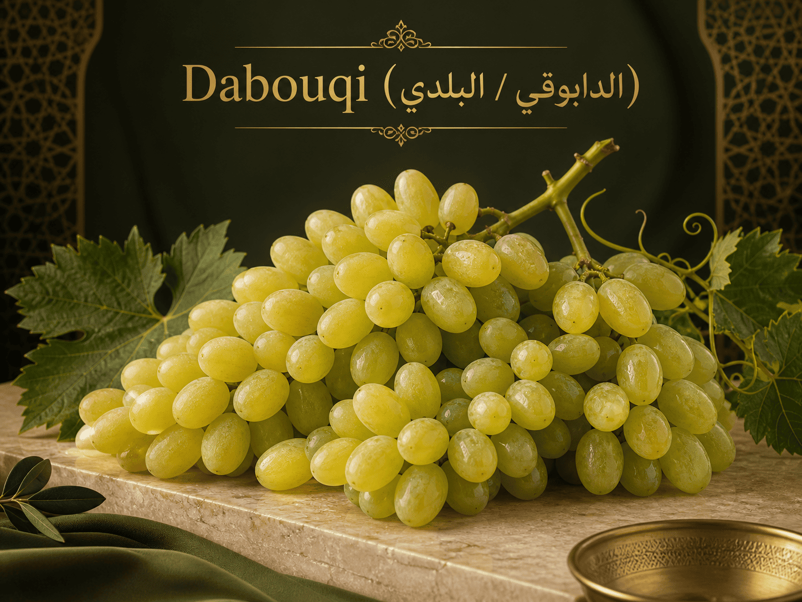
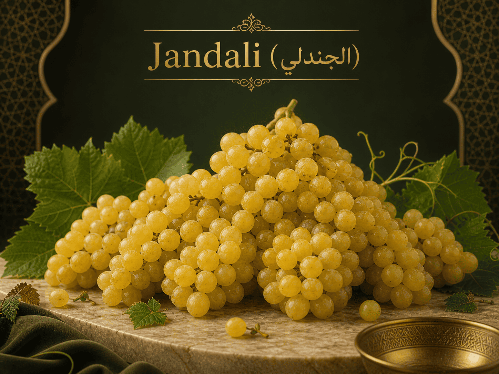
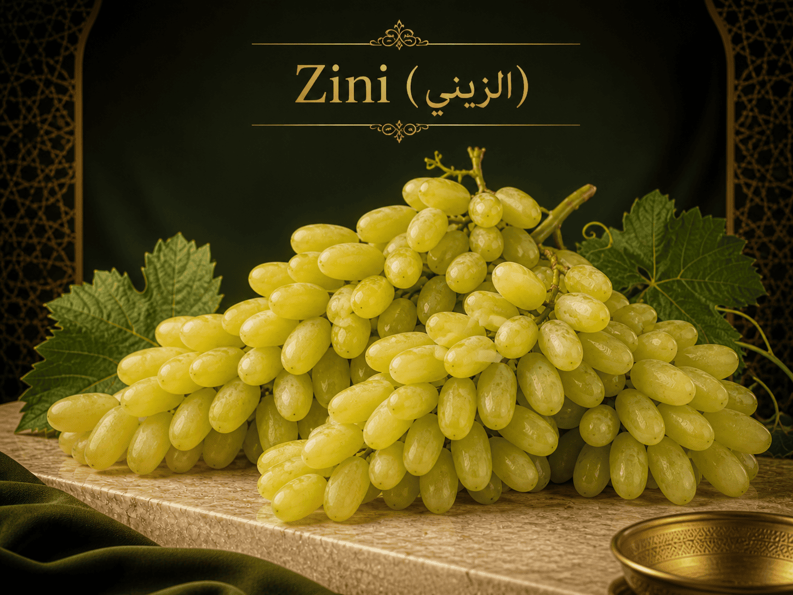
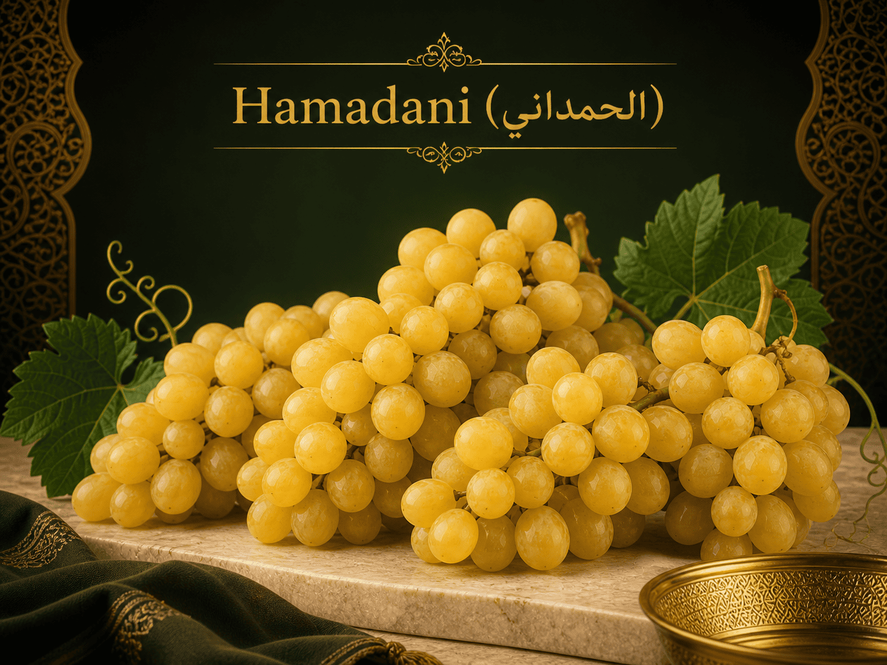
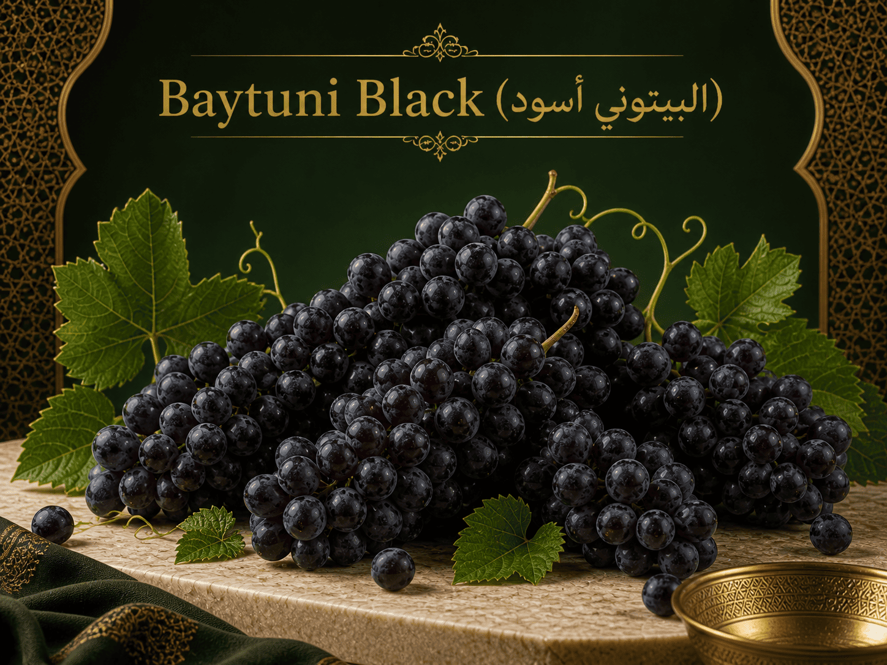
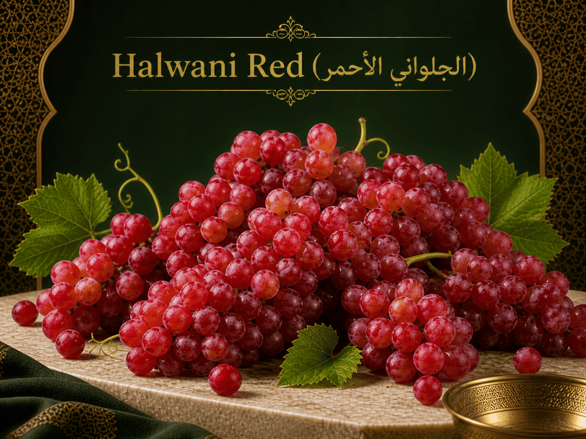

Fresh Grapes from Hebron
Baladi Store offers fresh grapes from Hebron farms. The grapes come in different local Palestinian varieties.

Grape Varieties
Dabouqi (الدابوقي / البلدي)

Price: 12 USD per kg
Dabouqi is one of the most common grape varieties in Palestine. It is used for eating, juice, and raisins.
Jandali (الجندلي)

Price: 13 USD per kg
Jandali grapes are small, round, tightly packed, and yellow.
Zini (الزيني)

Price: 15 USD per kg
Zini is a white grape variety with elongated fruits. It is known as a good table grape.
Hamadani (الحمداني)

Price: 14 USD per kg
Hamadani is a late-ripening variety. Its fruits are round, yellow, and sweet.
Baytuni Black (البيتوني أسود)

Price: 16 USD per kg
Baytuni Black is a dark traditional grape variety from Palestine.
Halwani Red (الحلواني الأحمر)

Price: 15 USD per kg
Halwani Red is a red grape variety with a sweet taste.
Specifications
| Attribute | Details |
|---|---|
| Product Name | Fresh Grapes |
| Brand | Baladi Store |
| Origin | Hebron, Palestine |
| Available Varieties | Dabouqi, Jandali, Zini, Hamadani, Baytuni Black, Halwani Red |
| Dabouqi Price | 12 USD per kg |
| Jandali Price | 13 USD per kg |
| Zini Price | 15 USD per kg |
| Hamadani Price | 14 USD per kg |
| Baytuni Black Price | 16 USD per kg |
| Halwani Red Price | 15 USD per kg |
| Weight per Package | 1 kg |
| Use | Fresh eating, juice, desserts, and raisins |
Customer Ratings and Reviews
Overall Rating: 4.8 out of 5
Review by Layla
The grapes were fresh and sweet.
Review by Omar
Good quality and nice packaging.
Review by Hana
Very tasty grapes from Hebron.